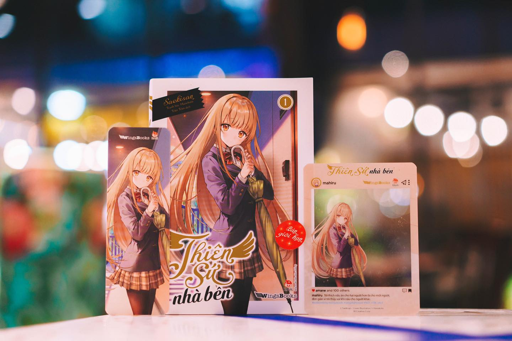

Top 1 Thiên sứ nhà bên
Tựa light novel nổi tiếng đến từ GA BUNKO. Tác phẩm đã lọt vào top 10 bảng xếp hạng Kono Light novel ga Sugoi năm 2021. Tuy chỉ là tân binh với số tập hạn chế nhưng tác phẩm đã có cho mình một lượng fan đông đảo. Tác phẩm nằm top 10 Kono Light novel ga Sugoi năm 2021 .Bán được hơn 400.000 bản với 4 tập truyện
Hình ảnh thiên sứ nhà bên trích trong ảnh minh họa
Hàng xóm kế bên căn hộ của Fujimiya Amane chính là nữ sinh xinh đẹp nhất trường cậu, Shiina Mahiru. Họ vốn chẳng có mối liên hệ nào cho đến một ngày mưa tầm tã, Amane tình nguyện đưa chiếc ô của mình cho cô bạn hàng xóm xinh đẹp tựa thiên thần, cả hai đã bắt đầu tương tác với nhau theo một cách kì quặc.Chẳng thể chịu được lối sinh hoạt cẩu thả khi sống một mình của Amane, Mahiru đã quyết định sẽ chăm sóc cậu từ những điều nhỏ nhất. Một Mahiru thiếu thốn sự gắn kết với gia đình đang dần mở lòng hơn, cùng một Amane hay tự ti đang ngày một đổi thay theo chiều hướng tích cực. Khoảng cách giữa hai con người không chút thành thật ấy đang từng bước thu hẹp lại...


Link mua sách trên Kim Đồng
Link mua sách trên Shope
Top 2 Arya bàn bên thỉnh thoảng chọc ghẹo tôi bằng tiếng Nga
“И наменятоже обрати внимание”
Arya - cô nàng xinh đẹp tuyệt trần có mái tóc bạch kim ngồi cạnh tôi - đang nở một nụ cười đắc thắng... Nhưng sự thật thì, câu tiếng Nga cô ấy vừa nói có nghĩa là [Hãy để ý đến tôi đi] cơ!
Tôi - Kuze Masachika - là người có khả năng nghe hiểu tiếng Nga thông thạo như người bản xứ. Nhưng không hề hay biết điều đó, cô nàng Arya hôm nay vẫn tiếp tục thể hiện những cảm xúc rất ngọt ngào bằng tiếng Nga khiến tôi không thể ngừng cười!?
Câu chuyện tình thanh xuân hài hước của tôi với cô nàng nữ sinh trung học gốc Nga hoàn hảo đã bắt đầu như thế...


Truyện được xuất bản hơn 500.000 bản tại Nhật . Và được in hơn 10.000 cho mỗi vol bản thường và 3.000 cho mỗi vol bản đặc biệt tại Việt Nam lun
Link shope mua sách
Top3 cô nàng shimotsuki trót phải lòng nhân vật nền
Shimotsuki Shiho là cô gái nổi tiếng xinh đẹp nhưng luôn toát ra vẻ trầm lặng, thậm chí cô còn chẳng bao giờ cười.
Thế nhưng, đôi mắt trong suốt ấy lại đang hướng về phía anh chàng mờ nhạt Nakayama Koutarou. "Mối quan hệ bí mật" giữa nữ chính tóc bạch kim và chàng trai nhân vật nền đã bắt đầu nhờ một cơ duyên kì lạ.
Và chuyện tình thanh xuân buồn tẻ của chàng trai nhân vật nền sẽ được "viết lại" bằng những chương hoa mộng mới!!